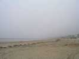
Pornichet, une splendide plage qui continue celle de La Baule (ou l'inverse...). Jeudi matin, temps brumeux et couvert, vent fort, ça part mal !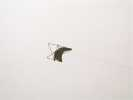
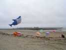
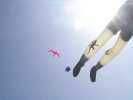
J'ai déjà perdu un Albatros à Brie (récupéré depuis, heureusement), je commence prudemment avec mon faucon crécerelle, qui vole bien mais ne bat pas des ailes, pas le temps d'y travailler avec tous ces reportages !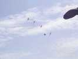
Le temps a viré au beau, la triste brume s'est dissipée, mais ça souffle toujours fort... Les pilotables se mettent quand même de la partie, à quatre....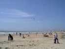
Hors festival, les kite-surfers prennent leur pied dans la baie, j'en ai compté 18 à un moment...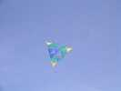
Même un Bell arrive à voler. Les noeuds, des bouts de Durit, sont beaucoup plus simples que pour celui de Brie : la structure étant triangulée ne se déforme pas de toute façon...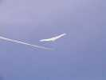
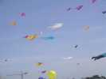
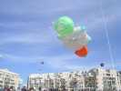
Une molécule de para-chloro-phényl-machin se gonfle et vole correctement, avec 2 lignes quand même...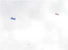
Les Hollandais ont sorti des rectangles très stables, dont la structure comporte 2 petites barres droites en long, et 2 barres transversales courbées non croisées joignant les coins...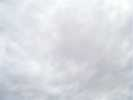
J'ai déroulé mes 200 m pour mon Spiralier, le vent étant maintenant bien faible, mais venant toujours de la mer, heureusement...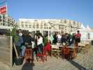
Le soir, direction Julo-Le-Bulot, une habitude maintenant bien acquise pour un apéritif combiné tapenade-bulots-paté-rillettes de maquereau, etc.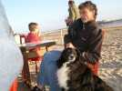
La chienne de Michel, le propriétaire de la grande pieuvre est une grande câline qui ne quitte pas son maître...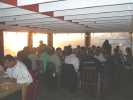
Dîner, c'est quand même sympa d'être là ensemble, sur la plage, pendant que le soleil se couche glorieusement...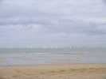
Vendredi matin, il fait beau, petit temps. Les voiliers, qu'on n'a pas vus de la journée hier, sont de sortie, sans doute pour une petite régate paisible...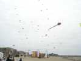
Les Awita montent une foultitude de cerfs-volants, et en ajouteront encore d'autres toute la journée !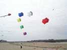
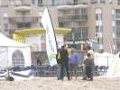
A midi, apéritif comme dab : ceux qui viennent en profitent, mais il n'y a pas d'appel, vous n'avez qu'à savoir...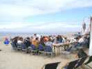
Pareil pour le déjeuner, monté en plein air pour profiter du beau temps !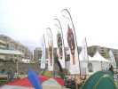
Jean-Michel a monté comme toujours ses belles bannières Griffons, du temps où il faisait du pilotable en team...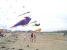
Cette très belle (je l'ai vu passer près) jeune femme baisse modestement la tête, dommage, le spectacle est là-haut...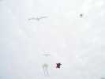
Bon, le vent est bien régulier et moyen, je prends le risque : je sors 2 oiseaux à la fois, bien que cela ne m'ait pas toujours réussi, c'est le moins qu'on puisse dire...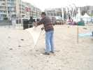
Yannick a réalisé un bel Eddy à l'ancienne avec baguettes en bois et enture démontable au croisement, toile de coton, etc.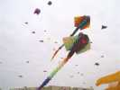
Ca y est, les AWITA (All Ways In The Air si vous ne le savez pas) ont sorti une deuxième raie manta aussi grande que la première, sinon plus...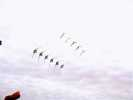
Sur la demande de Christian, qui commente aujourd'hui, on improvise un team avec les trains de Jean-Michel et d'un autre fou. C'est très spectaculaire !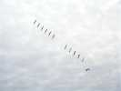
Ils accomplissent même un tour de force que je n'ai jamais vu (et pourtant...) : le deuxième train vient en refueling, le(s) nez entre les lignes du premier...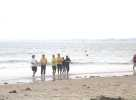
Il y aura bien sûr un mégateam, un petit méga cette année...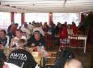
Le soir re-belote chez Julo-Le-Bulot, avec son délicieux chutney et apéritif à la menthe. Dominique prétend avoir acheté le restau, mais fera un discours émouvant où il évoque les visées pour l'année prochaine : un festival Zen, avec plein de transats pour les spectateurs...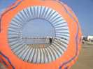
Les Hollandais ont lancé deux bols aux couleurs du pays. Ils n'ont pas d'augets sur le bord, mais des ailettes centrales qui ferment pas mal le trou et lui permettent de bien se gonfler...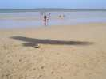
J'ai mis mon Condor en l'air malgré de nombreuses faiblesses réparées comme toujours avec des bouts de ficelle sur le terrain. Il volera bien, symétriquement après une journée de réglages et retouches, jusqu'à ce qu'un révo me le flanque par terre...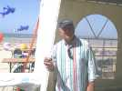
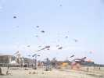
Les conditions sont très bonnes, et il y a maintenant un sacré bestiaire en l'air dans le ciel pornichetain...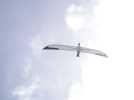
Jean-Marc a lui aussi sorti son Albatros blanc et noir, et doté d'une queue plate. Il vole splendidement, avec un petit lest arrière de sécurité ajouté pour contrer les baisses de vent... !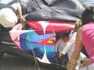
Et là, c'est quoi ce tunnel ? C'est l'intérieur du trilobite que les enfants sont invités à visiter, ça leur plaît beaucoup ! Mais comme pour la baleine qui a recraché Jonas, il faut bien ressortir !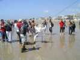
Pour faire voler la grande pieuvre, il n'y a pas d'ancrage valable, on recrute une équipe de volontaires dont, à côté de gens sérieux, Polnareff et ses supporters...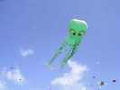
Avec la traction qu'on assure, la pieuvre monte, monte, je n'en ai jamais vu voler si haut sans porteur...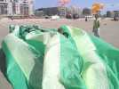
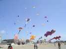
Les nounours, gecko, chien, pieuvres etc, tout le petit monde est en l'air, maintenant...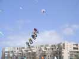
Il y a même un train de grenouilles, sans doute un hommage anglais à la France...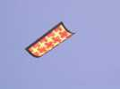
Plus intéressant, ce beau Edo à la décoration géométrique et colorée...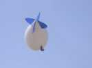
Samedi a été surveillé par un ballon à hélium qui prend des photos au-dessus de la mêlée... L'appareil est directement accroché sous le ballon...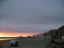
Bon, le festival est fini, le soleil se couche entre deux strates de nuages et se reflète dans les immeubles de la promenade pour nous faire plaisir une dernière fois !